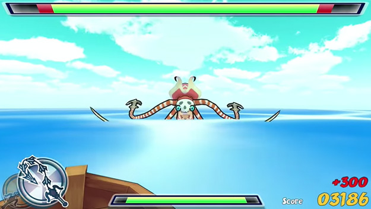

Award Winners
Museum of Simulation Technology
/ Reelblade: Battle of the High Seas
/ Reelblade: Battle of the High Seas

Award Winners
Award Winners of 2015
-

-
Reelblade: Battle of the High Seas
Yuichiro Katsumoto / Project Reelblade
BEST THECHNOLOGICAL GAME AWARD
「鞭から剣へと瞬時に切り替わるニンジャトラックの特徴を活かした、幅広い年齢層が楽しめる体感型のゲーム」という私たちのリクエストに対して、SUTD Game Labは「鞭状態でモンスターを釣り上げ、剣状態でモンスターを倒す、アクションゲーム」に仕上げてくれました。
What's your background in making games?？
現在、私はシンガポール国立大学内に設立されたKeio-NUS CUTE Centerにて、電子玩具の発明を行う研究者として勤務しています。今から約4年前に、当時の同僚の助けを得て、ニンジャトラックというデバイスを発明しました。ニンジャトラックは、形状と柔軟性を切り替えることができる、コンピュータのインタフェースです。ニンジャトラックを利用すれば、空想の武器・蛇腹剣のように、鞭から剣へと瞬時に切り替わるゲームコントローラを作ることができます。このインタフェースの魅力を引き出してくれるアプリケーションを求めて、昨年より私たちは、シンガポール国内のデベロッパーに、コンテンツの開発を依頼してきました。 今回プレゼンテーションを行うゲーム・ReelBladeは、SUTD Gamelabによって開発されたものです。
What's your background in making games?
ゲームは今年の春から夏にかけて制作を行い、同時にゲーム用にコントローラを再開発しました。
How much time did you spend working on the game?
「鞭から剣へと瞬時に切り替わるニンジャトラックの特徴を活かした、幅広い年齢層が楽しめる体感型のゲーム」という私たちのリクエストに対して、SUTD Game Labは「鞭状態でモンスターを釣り上げ、剣状態でモンスターを倒す、アクションゲーム」に仕上げてくれました。
What development tools did you use?
ハードウェアの開発には、Arduinoや3Dプリンタなど、ラピッドプロトタイピングツールが駆使されています。ソフトウェアに関しても同様で、Unityが使われています。
What is your goal as a game developer?
体験の新しさと、確かな面白さを、商品として届けられるように、努力したいと考えています。
SOWN2015の後の変化などありましたか？
東京ゲームショーでの展示を通して、いくつかの問題点を発見しました。そのひとつがコントローラーの強度です。当初は3Dプリンタで出力したABSを使用していたため、プレイ中に折れることがありました。そこで素材をナイロンへと変更しました。これにより、以後壊れることなく、安全に使用できています。
将来のゲーム開発予定など
プロトタイプからプロダクトへ。多くの人の手に渡るように、着実に進化させていこうと考えています。
SOWN応募者へのメッセージをお願いします
自分たちのゲームを20万を超える来場者に伝えられる値千金のチャンスです。展示を通して、切磋琢磨しあえる開発者仲間も増えましたし、自分たちのゲームの長所短所を発見することができました。是非とも応募すべきです。